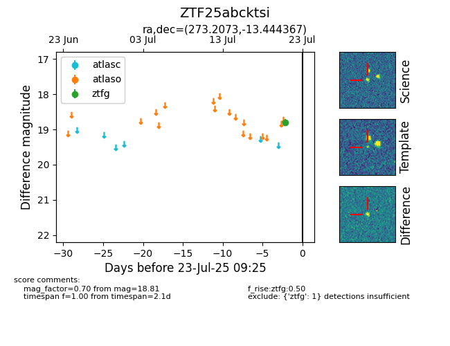

Target ZTF25abcktsi at 2025-07-23 11:48, see:
FINK: fink-portal.org/ZTF25abcktsi
Lasair: lasair-ztf.lsst.ac.uk/objects/ZTF25abcktsi
ALeRCE: alerce.online/object/ZTF25abcktsi
alt names
ZTF25abcktsi (ztf,fink)
coordinates:
equatorial (ra, dec) = (273.2073,-13.44437)
galactic (l, b) = (16.5823,+2.24175)
photometry
last ztfg=18.81
1 ztfg detections
